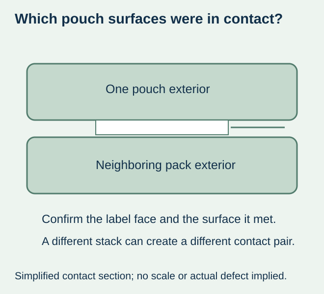
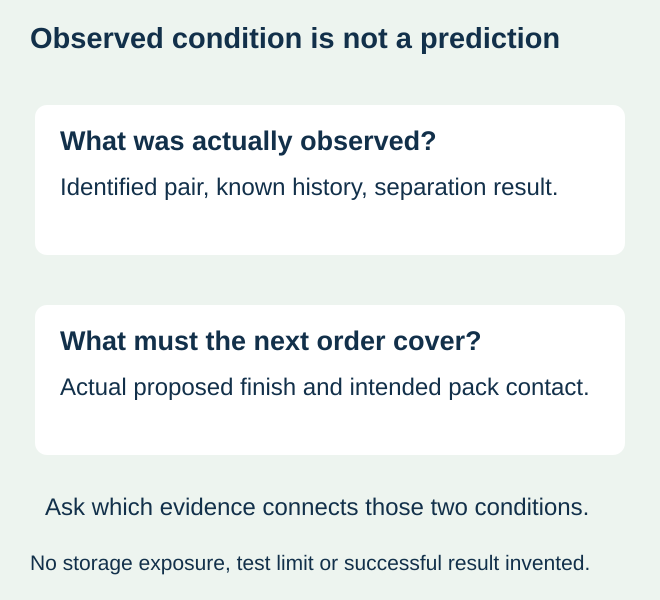

A food packer separates a stack of labeled pouches and finds that some packs resist coming apart at a label-contact region. The print may look clean until separation, and the labels may remain attached. Calling the event a rub failure or simply asking for stronger adhesive does not identify the surfaces that were sticking.
Preserve the corresponding contact surfaces and record the actual held-contact history before choosing a finish or packing change. If unwanted adhesion occurs between finished-pack surfaces, investigate that separation question directly. If the evidence instead concerns print marks, sticky roll edges or a label leaving its pouch, route it to the relevant material interface rather than force every observation into one diagnosis.


Identify what actually touched in the finished stack
A label face may meet another label, a neighboring pouch’s outer film, a divider or a different packaging component. Do not assume a face-to-face label contact merely because both packs carry labels. Identify the stack or case arrangement where it was actually observed, and mark which surface corresponds to the affected area.
| Observation | Keep or identify | Question it supports |
|---|---|---|
| Finished packs resist separating at a contact region | Both corresponding surfaces and their actual arrangement | Is unwanted adhesion present at this external interface? |
| Print-like marks appear on another side | Source/receiving surfaces and any retained neighboring layer | Is visible transfer the separate concern? |
| Residue is confined to a roll side or edge | Roll, wrapper and corresponding contact evidence | Does the event concern the supplied roll rather than finished-pack contact? |
| The whole label leaves the pouch | Pouch contact face and label underside | Has a different package bond separated? |
The set-off guide concerns transfer marks and their food-packaging review. The sticky-edge guide preserves residue and its corresponding contact. Neither observation should be silently substituted for the finished-pack separation behaviour at issue here.


Keep a current observation separate from a future-storage prediction
ASTM’s public D3354 scope describes measuring existing blocking—unwanted adhesion—between plastic-film layers, and explicitly distinguishes that from measuring susceptibility to blocking. Its public explanation identifies contact and history as relevant. A qualified provider must assess whether a method applies to the proposed specimen; citing the title does not establish finished-pouch performance or predict another storage route.
Record what the affected packs actually experienced and what remains unknown. Packing date, known storage and transport conditions, contact duration and package arrangement can help the technical parties define a relevant review. Do not fill missing history with the warehouse’s current setting or an unrelated production estimate.
A current measurement or successful separation observation represents its recorded samples and conditions. It should not be reported as proof that a different finish, longer hold or changed case arrangement will behave the same. Ask which additional comparison is appropriate for the intended order rather than invent a universal blocking limit.
Preserve evidence before trying a remedy
Avoid repeatedly pressing packs together, peeling them apart, cleaning the surfaces or heating the only affected sample to make the effect clearer. Those actions can change the evidence. Ask the responsible investigator how to retain representative corresponding packs and an identified unaffected comparison where available; record any handling already performed.
Describe whether separation leaves a mark, changes a surface or removes a layer. These are observations, not proof of a particular coating, ink, cure or adhesive cause. Keep the supplied construction identities available so a technical review can relate the material to the actual package.
Compare a disclosed surface or packing proposal
If the proposed response changes the label finish, request the complete construction and representative finished-pack evidence. If it changes how surfaces contact in the case, document that alternative and any actual material, packing-work or presentation consequence. A separation aid or new finish is not automatically available, free or sufficient.
For a hypothetical dry-food pouch, an initial comparison may involve the existing finish and an identified alternative in the same relevant packing arrangement. If the arrangement and finish change together, the result can support that complete combination without identifying one isolated cause. Keep that distinction visible in the order decision.
The responsible business and quality owners need an explicit decision for affected stock and for the next proposed supply. A replacement order does not by itself resolve the original stock question. Conversely, a clean-looking printed face after separation does not prove the intended storage condition was covered.
Close the brief with the actual contact requirement
State which external surface pair must separate acceptably after the intended packing route and what observations matter. Keep the accepted sample, construction, contact history and limits with the order. This site does not promise a blocking-free grade or a particular storage result from the words laminated, matte or glossy; any proposal requires project confirmation.
Discuss the unresolved label requirement
Provide the actual pouch/label constructions, which surfaces touched, the observed separation or damage and the known packing/storage history. Preserve corresponding samples as the responsible investigator requests and state the finished-pack outcome required. Review the food-label product scope and prepare a label specification inquiry. The contact page opens an email draft and lists email or WhatsApp for attachments. Supply, proof options, testing, pricing and timing require project confirmation.